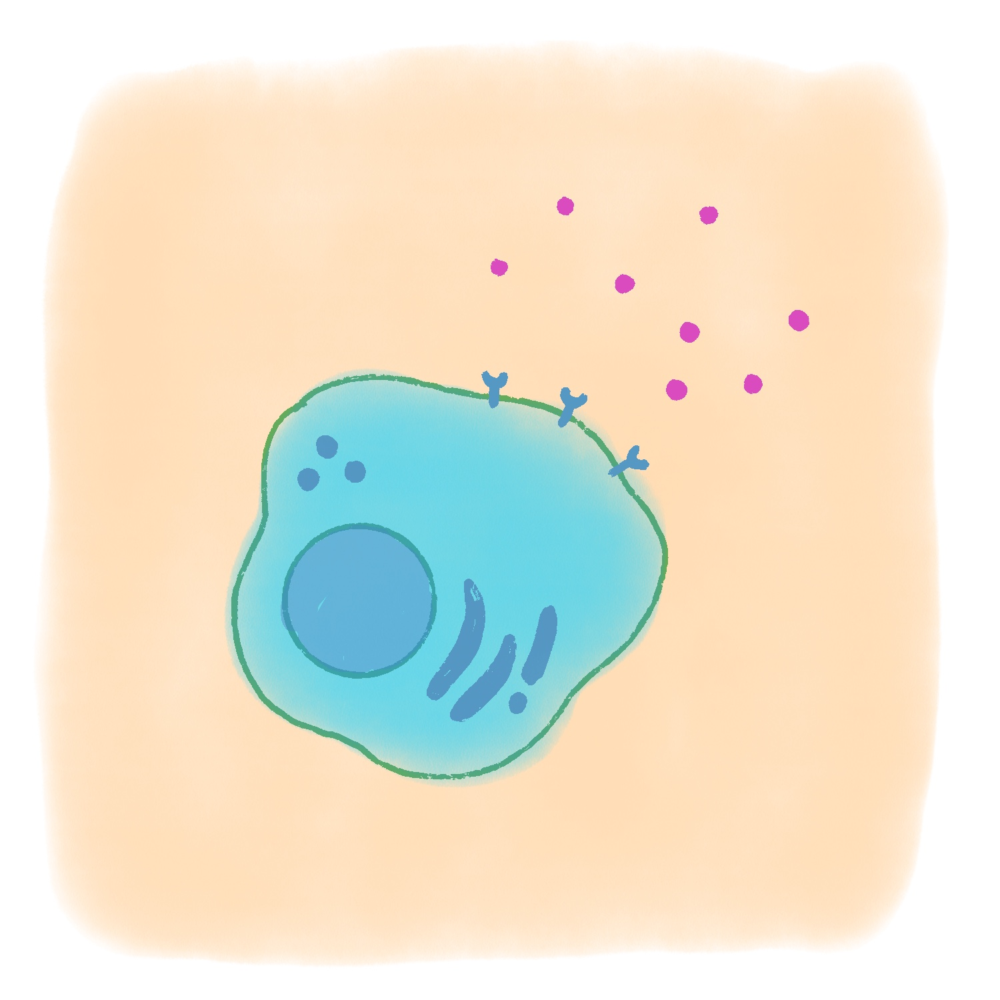
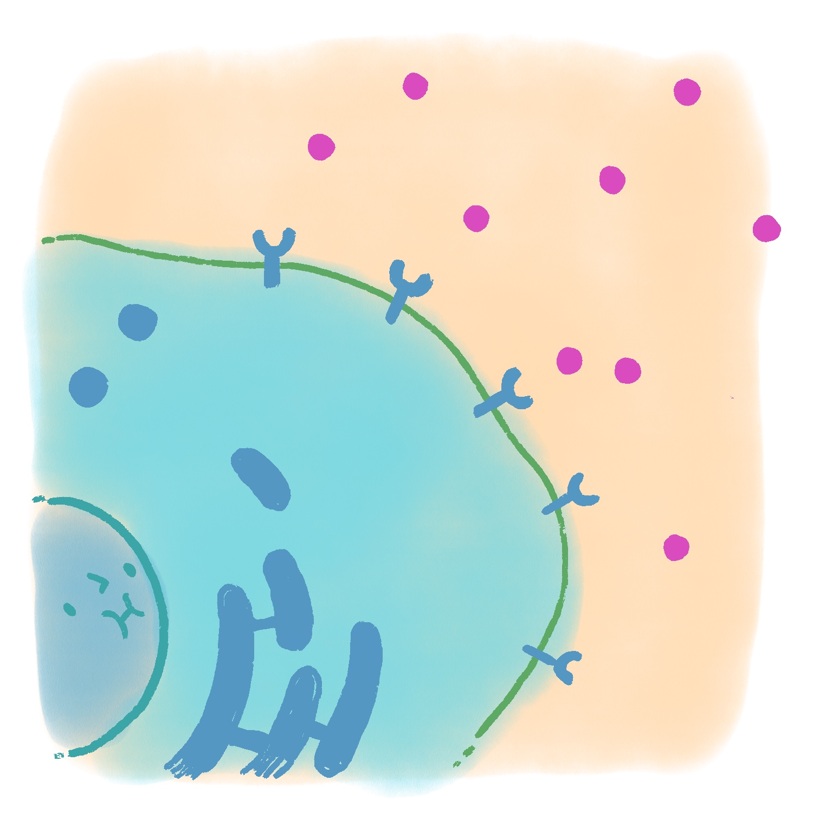
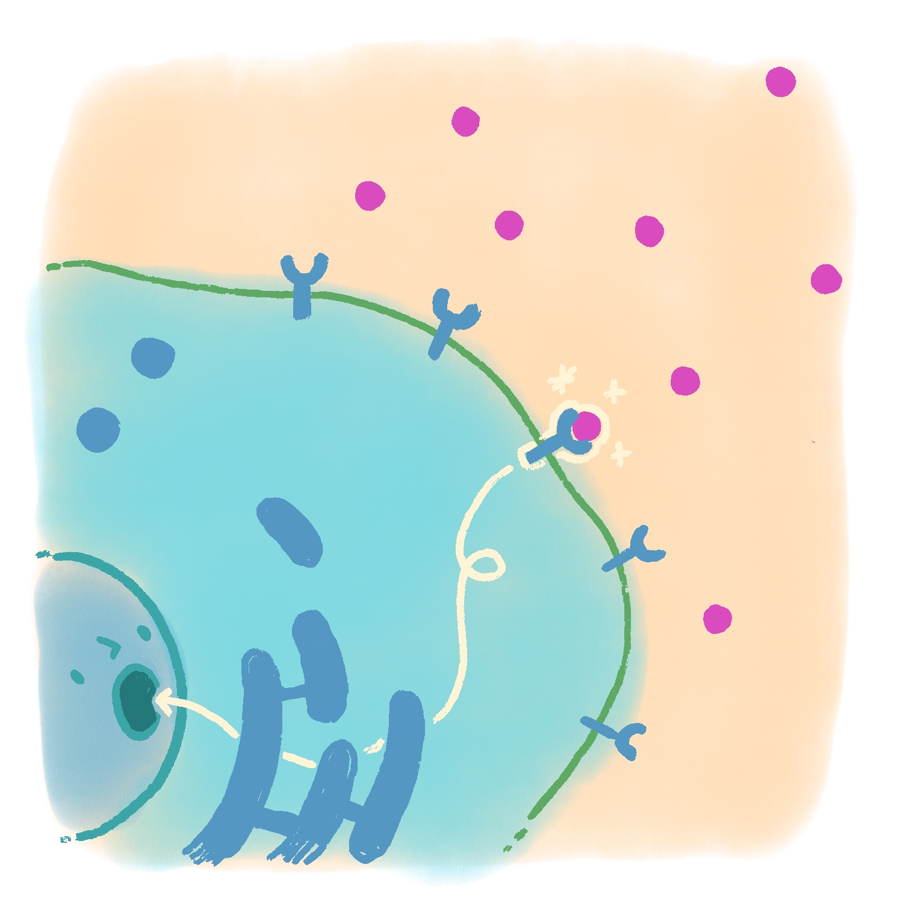

Deep in the Funkythalamus, a cell named Glimmerblob floated quietly, waiting for something to happen.
As you scroll, the visual on the left should eventually change.
A messenger molecule drifted into view. It carried information the cell needed to respond.
This section should trigger the second image.
When Molecule X connected to Receptor Y, the pathway activated and the cell “lit up.”
This section should trigger the third image.